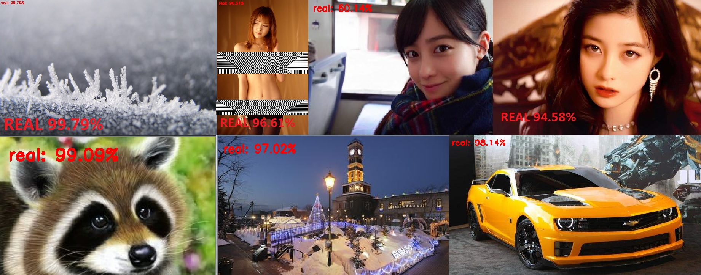

起因
刚刚在Danbooru上抓了近百万张图，结果里面竟然混有不少的三次元图，如果人工一张一张的挑选就太麻烦了，就想写程序来解决。一开始想的是用Sequential跑个三层模型出来，又想到是不是有更简单的方法，就去网上查了查，但是没有找到相关的文章。之后去群里问了问，纸片协会的一喵大佬给出了两个方法，又甩出一个12页的全英文论文，无奈能力不足，搞了许久也没能搞懂，只能绕回到神经网络了。
先是写了三层神经网络模型，发现效果不是特别的理想，又重新写了卷积神经网络，这就避免了将图像展开丢失了很多重要的信息这一弊端。
准备数据集
既然是二次元图像和三次元图像的分类，自然要准备二次元和三次元两类图像，各准备了1600张左右，这里有一个注意点，数据集尽量要覆盖全面，例如三次元数据集要包括人物、动物以及自然景物等，越全面分类越精确，将数据集放到acgn和real文件夹中。
编写程序
导入必要的包文件
from model_name.simple_vggnet import SimpleVGGNet
from sklearn.preprocessing import LabelBinarizer
from sklearn.model_selection import train_test_split
from sklearn.metrics import classification_report
from keras.optimizers import SGD
from keras.preprocessing.image import ImageDataGenerator
from my_utils import utils_paths
import matplotlib.pyplot as plt
import numpy as np
import argparse
import random
import pickle
import cv2
import os编写参数解析
其中dataset指明数据集的路径，model指明模型输出的文件名，label_bin指明标签文件名，plot为数据可视化的图片名。
# 输入参数
ap = argparse.ArgumentParser()
ap.add_argument("-d", "--dataset", required=True, help="path to input dataset of images")
ap.add_argument("-m", "--model", required=True, help="path to output trained model")
ap.add_argument("-l", "--label-bin", required=True, help="path to output label binarizer")
ap.add_argument("-p", "--plot", required=True, help="path to output accuracy/loss plot")
args = vars(ap.parse_args())读取图像数据
# 读取数据和标签
print("[INFO] loading images...")
data = []
labels = []
# 拿到路径
imagePaths = sorted(list(utils_paths.list_images(args["dataset"])))
random.seed(42)
random.shuffle(imagePaths)
# 读取数据
for imagePath in imagePaths:
image = cv2.imread(imagePath)
try:
image = cv2.resize(image, (64, 64))
data.append(image)
label = imagePath.split(os.path.sep)[-2]
labels.append(label)
except:
pass这里有三个注意点，分别是：
- 要打乱数据集中图像的顺序，且训练过程中应保持数据集中图像顺序不变，这样可以避免偶然性和利于对比，
random.seed()和random.shuffle()完成了这项工作。 - 数据集过大，无法保证每张图都是有效的，因此数据集比1600 + 1600大出很多，在resize时捕获了异常，无效图片直接丢掉。
label = imagePath.split(os.path.sep)[-2]这是很巧妙的一行代码，因为我们将数据集分类丢到acgn和real文件夹，那么图像的路径为xxx/acgn/xxx.jpg或者xxx/real/xxx.jpg，将路径按os.path.sep分割开来，自然倒数第二个元素就是图像的标签。
图像归一化处理
# 预处理
data = np.array(data, dtype="float") / 255.0
labels = np.array(labels)数据集切分
将数据集分割成训练集和测试集
# 数据集切分
(trainX, testX, trainY, testY) = train_test_split(data, labels, test_size=0.25, random_state=42)
标签转换
将标签转换为one-hot形式
# 标签转换
lb = LabelBinarizer()
trainY = lb.fit_transform(trainY)
testY = lb.transform(testY)
tY = testY.tolist()
for i in range(0, len(tY)):
if tY[i][0] == 1:
tY[i].insert(0, 0)
else:
tY[i].insert(0, 1)
testY = np.array(tY)
aY = trainY.tolist()
for i in range(0, len(aY)):
if aY[i][0] == 1:
aY[i].insert(0, 0)
else:
aY[i].insert(0, 1)
trainY = np.array(aY)图像增强
# 数据增强
aug = ImageDataGenerator(rotation_range=30, width_shift_range=0.1,
height_shift_range=0.1, shear_range=0.2, zoom_range=0.2,
horizontal_flip=True, fill_mode="nearest")
建立卷积神经网络
# 建立卷积神经网络
model = SimpleVGGNet.build(width=64, height=64, depth=3, classes=len(lb.classes_))
初始化参数
# 初始化参数
INIT_LR = 0.01
EPOCHS = 50
BS = 32训练神经网络
# 损失函数
print("[INFO] 训练网络...")
opt = SGD(lr=INIT_LR, decay=INIT_LR / EPOCHS)
model.compile(loss="categorical_crossentropy", optimizer=opt, metrics=["accuracy"])
# 训练网络
H = model.fit_generator(aug.flow(trainX, trainY, batch_size=BS),
validation_data=(testX, testY), steps_per_epoch=len(trainX) // BS, epochs=EPOCHS)
测试模型
# 测试
print("[INFO] 测试网络...")
predictions = model.predict(testX, batch_size=32)
print(classification_report(testY.argmax(axis=1), predictions.argmax(axis=1), target_names=lb.classes_))
数据可视化
# 展示结果
N = np.arange(0, EPOCHS)
plt.style.use("ggplot")
plt.figure()
plt.plot(N, H.history["loss"], label="train_loss")
plt.plot(N, H.history["val_loss"], label="val_loss")
plt.plot(N, H.history["accuracy"], label="train_acc")
plt.plot(N, H.history["val_accuracy"], label="val_acc")
plt.title("Training Loss and Accuracy (SmallVGGNet)")
plt.xlabel("Epoch #")
plt.ylabel("Loss/Accuracy")
plt.legend()
plt.savefig(args["plot"])保存图像和标签
# 保存模型
print("[INFO] 保存模型...")
model.save(args["model"])
f = open(args["label_bin"], "wb")
f.write(pickle.dumps(lb))
f.close()测试
模型训练完之后当然要测试了，找几张没有出现在数据集中的图片用训练好的模型测试一下，注意，一定要用没有出现在数据集中的图片。
二次元图像测试
貌似效果还不错？甚至出现了可信度100%的情况，分对了5张，奇怪的是第三张被分为三次元且可信度为92.37%？让我们仔细观察一下为什么会出现这种情况。
我们可以明显看出第三幅图与其他五张的风格明显不同，说是风格不同，不如说是作画工具不同，第三幅图可能是用水彩或者彩铅绘制的，查一下来源果然如此，是一副水彩画。
再找一幅水彩画试试。
同样被识别为三次元图像，但是可信度仅为64.93%，要解决这个问题其实也简单，准备一些水彩画丢进数据集就可以了，这里就是因为缺少水彩画的数据才导致了误判。
三次元图像测试

效果还不错？
补充代码
测试用代码
# 导入所需工具包
from keras.models import load_model
import argparse
import pickle
import cv2
# 设置输入参数
ap = argparse.ArgumentParser()
ap.add_argument("-i", "--image", required=True, help="path to input image we are going to classify")
ap.add_argument("-m", "--model", required=True, help="path to trained Keras model")
ap.add_argument("-l", "--label-bin", required=True, help="path to label binarizer")
ap.add_argument("-w", "--width", type=int, default=64, help="target spatial dimension width")
ap.add_argument("-e", "--height", type=int, default=64, help="target spatial dimension height")
ap.add_argument("-f", "--flatten", type=int, default=0, help="whether or not we should flatten the image")
args = vars(ap.parse_args())
# 加载测试数据并进行相同预处理操作
image = cv2.imread(args["image"])
output = image.copy()
image = cv2.resize(image, (args["width"], args["height"]))
# scale the pixel values to [0, 1]
image = image.astype("float") / 255.0
# 是否要对图像就行拉平操作
if args["flatten"] > 0:
image = image.flatten()
image = image.reshape((1, image.shape[0]))
# CNN的时候需要原始图像
else:
image = image.reshape((1, image.shape[0], image.shape[1],
image.shape[2]))
# 读取模型和标签
print("[INFO] loading network and label binarizer...")
model = load_model(args["model"])
lb = pickle.loads(open(args["label_bin"], "rb").read())
# 预测
preds = model.predict(image)
print(preds)
# 得到预测结果以及其对应的标签
i = preds.argmax(axis=1)[0]
label = lb.classes_[i]
# 在图像中把结果画出来
text = "{}: {:.2f}%".format(label, preds[0][i] * 100)
cv2.putText(output, text, (10, 30), cv2.FONT_HERSHEY_SIMPLEX, 0.7,
(0, 0, 255), 2)
# 绘图
cv2.imshow("Image", output)
cv2.waitKey(0)utils_paths.py
import os
image_types = (".jpg", ".jpeg", ".png", ".bmp", ".tif", ".tiff")
def list_images(basePath, contains=None):
# return the set of files that are valid
return list_files(basePath, validExts=image_types, contains=contains)
def list_files(basePath, validExts=None, contains=None):
# loop over the directory structure
for (rootDir, dirNames, filenames) in os.walk(basePath):
# loop over the filenames in the current directory
for filename in filenames:
# if the contains string is not none and the filename does not contain
# the supplied string, then ignore the file
if contains is not None and filename.find(contains) == -1:
continue
# determine the file extension of the current file
ext = filename[filename.rfind("."):].lower()
# check to see if the file is an image and should be processed
if validExts is None or ext.endswith(validExts):
# construct the path to the image and yield it
imagePath = os.path.join(rootDir, filename)
yield imagePath参考内容
部分代码参考自阿里云